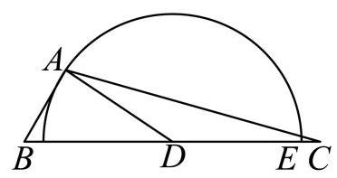
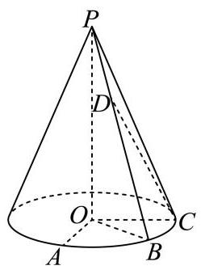

填空题 按本区原卷题号顺序排列。
虹口 · 第1题 ★★☆☆☆ · 教师预估 设全集为 U = { − 2 , − 1 , 0 , 1 , 2 , 3 } U = \{ - 2, - 1,0,1,2,3\} U = { − 2 , − 1 , 0 , 1 , 2 , 3 } A = { x ∣ x x − 2 ≥ 0 , x ∈ U } A = \left\{ {x\left| {\;\frac{x}{x - 2} \geq 0}\right. , x \in U}\right\} A = { x x − 2 x ≥ 0 , x ∈ U } A ˉ = \bar{A} = A ˉ =
虹口 · 第2题 ★☆☆☆☆ · 教师预估 已知一个直三棱柱的侧棱长为 2，底面面积为 2，则该三棱柱的体积为___.
虹口 · 第3题 ★☆☆☆☆ · 教师预估 已知离散型随机变量 X X X B ( 8 , 1 2 ) B\left( {8,\frac{1}{2}}\right) B ( 8 , 2 1 ) D ( X ) = D\left( X\right) = D ( X ) =
虹口 · 第4题 ★★☆☆☆ · 教师预估 设 a : x ≤ m a : x \leq m a : x ≤ m β : ∣ x − 2 ∣ ≤ 1 \beta : \left| {x - 2}\right| \leq 1 β : ∣ x − 2 ∣ ≤ 1 a a a β \beta β m m m
虹口 · 第5题 ★★☆☆☆ · 教师预估 某工厂为判断两种不同的操作方法是否对生产某种零件的合格个数有影响，收集了相关数据，绘制了 2 × 2 2 \times 2 2 × 2 H 0 {H}_{0} H 0 χ 2 = 5.284 {\chi }^{2} = {5.284} χ 2 = 5.284 P ( χ 2 ≥ 3.841 ) ≈ 0.05 P\left( {{\chi }^{2} \geq {3.841}}\right) \approx {0.05} P ( χ 2 ≥ 3.841 ) ≈ 0.05 a = 0.05 a = {0.05} a = 0.05 H 0 {H}_{0} H 0
虹口 · 第6题 ★★☆☆☆ · 教师预估 在 A B C {ABC} A BC A B = 1 , B C = 2 {AB} = 1,{BC} = 2 A B = 1 , BC = 2 B A → ⋅ C A → = 7 5 \overrightarrow{BA} \cdot \overrightarrow{CA} = \frac{7}{5} B A ⋅ C A = 5 7 cos ∠ A B C = \cos \angle {ABC} = cos ∠ A BC =
虹口 · 第7题 ★★★☆☆ · 教师预估 将 ( 2 − x ) 4 {\left( 2 - x\right) }^{4} ( 2 − x ) 4 X = 1 X = 1 X = 1 X = 0 X = 0 X = 0 E [ X ] = E\left\lbrack X\right\rbrack = E [ X ] =
虹口 · 第8题 ★★★★☆ · 教师预估 在正四棱台 A B C D − A 1 B 1 C 1 D 1 {ABCD} - {A}_{1}{B}_{1}{C}_{1}{D}_{1} A BC D − A 1 B 1 C 1 D 1 A B = 2 , A 1 B 1 = 4 {AB} = 2,{A}_{1}{B}_{1} = 4 A B = 2 , A 1 B 1 = 4 C 1 D 1 {C}_{1}{D}_{1} C 1 D 1 A A 1 A{A}_{1} A A 1 π 3 \frac{\pi }{3} 3 π A − A 1 B 1 − D 1 A - {A}_{1}{B}_{1} - {D}_{1} A − A 1 B 1 − D 1 θ \theta θ tan θ = \tan \theta = tan θ =
虹口 · 第9题 ★★★☆☆ · 教师预估 本题资料或解析有待核事项，预览不可作为已审定成品。
已知复数 z z z z + 1 z z + \frac{1}{z} z + z 1 ∣ z − 2 − i 2 ∣ \left| {z - 2 - \frac{\mathrm{i}}{2}}\right| z − 2 − 2 i
虹口 · 第10题 ★★★★☆ · 教师预估 已知焦点为 F F F C : y 2 = 4 x C : {y}^{2} = {4x} C : y 2 = 4 x A A A B B B ∠ A F B = 150 ∘ \angle {AFB} = {150}^{ \circ } ∠ A FB = 150 ∘ E E E A A A B B B E E E C C C H H H ∣ A B ∣ 2 ∣ E H ∣ 2 \frac{{\left| AB\right| }^{2}}{{\left| EH\right| }^{2}} ∣ E H ∣ 2 ∣ A B ∣ 2
虹口 · 第11题 ★★★★☆ · 教师预估 某种健身拉力器的手臂固定支架为 B E {BE} BE B B B
点 D D D E E E C C C B 、 D 、 E 、 C B\text{ 、 }D\text{ 、 }E\text{ 、 }C B 、 D 、 E 、 C D E {DE} D E r r r B D {BD} B D 1.3 r {1.3r} 1.3 r B B B D D D D E {DE} D E D D D B C {BC} BC C E {CE} CE C A {CA} C A C E = 0.1 r {CE} = {0.1r} CE = 0.1 r ∠ A B C = 3 ∠ A C B \angle {ABC} = 3\angle {ACB} ∠ A BC = 3∠ A CB ∠ A C B = \angle {ACB} = ∠ A CB =

虹口 · 第12题 ★★★★★ · 教师预估 原题对点集只给出单向限制，尚不能唯一确定完整取值范围；源答案与条件的对称性也存在冲突。
在以 O O O i → = ( 1 , 0 , 0 ) , j → = ( 0 , 1 , 0 ) , A \overrightarrow{i} = \left( {1,0,0}\right) ,\overrightarrow{j} = \left( {0,1,0}\right) , A i = ( 1 , 0 , 0 ) , j = ( 0 , 1 , 0 ) , A B B B A = { P ∣ O P → ⋅ j → = 1 , ⟨ O P → , j → ⟩ = π 4 } A = \left\{ {P\left| {\;\overrightarrow{OP} \cdot \overrightarrow{j} = 1}\right. ,\left\langle {\overrightarrow{OP},\overrightarrow{j}}\right\rangle = \frac{\pi }{4}}\right\} A = { P OP ⋅ j = 1 , ⟨ OP , j ⟩ = 4 π } Q ∈ B Q \in B Q ∈ B P ∈ A P \in A P ∈ A O P → ⋅ O Q → = 2 \overrightarrow{OP} \cdot \overrightarrow{OQ} = 2 OP ⋅ OQ = 2 T ∈ B , O T → = x i → + y j → ( x 、 y ∈ R ) T \in B,\overrightarrow{OT} = x\overrightarrow{i} + y\overrightarrow{j}\left( {x\text{ 、 }y \in \mathbf{R}}\right) T ∈ B , OT = x i + y j ( x 、 y ∈ R ) ∣ O T → − j → ∣ = 2 \left| {\overrightarrow{OT} - \overrightarrow{j}}\right| = 2 OT − j = 2 O T → ⋅ i → \overrightarrow{OT} \cdot \overrightarrow{i} OT ⋅ i
选择题 按本区原卷题号顺序排列。
虹口 · 第13题 ★☆☆☆☆ · 教师预估 双曲线 y 2 − 2 x 2 = 1 {y}^{2} - 2{x}^{2} = 1 y 2 − 2 x 2 = 1
A. y = ± 2 x y = \pm \sqrt{2}x y = ± 2 x
B. x = ± 2 y x = \pm \sqrt{2}y x = ± 2 y
C. y = ± 2 x y = \pm {2x} y = ± 2 x
D. x = ± 2 y x = \pm {2y} x = ± 2 y
虹口 · 第14题 ★★★☆☆ · 教师预估 已知 P ( A ) P\left( A\right) P ( A ) P ( B ) P\left( B\right) P ( B ) A A A B B B 0 < P ( B ) < 1 0 < P\left( B\right) < 1 0 < P ( B ) < 1 A A A B B B
A. P ( A ) = 1 − P ( B ) P\left( A\right) = 1 - P\left( B\right) P ( A ) = 1 − P ( B )
B. P ( A ∣ B ) = P ( A ∣ B ˉ ) P\left( {A \mid B}\right) = P\left( {A \mid \bar{B}}\right) P ( A ∣ B ) = P ( A ∣ B ˉ )
C. P ( A ∪ B ) = P ( A ) + P ( B ) P\left( {A \cup B}\right) = P\left( A\right) + P\left( B\right) P ( A ∪ B ) = P ( A ) + P ( B )
D. P ( A ∣ B ) = P ( A ˉ ∣ B ) P\left( {A \mid B}\right) = P\left( {\bar{A} \mid B}\right) P ( A ∣ B ) = P ( A ˉ ∣ B )
虹口 · 第15题 ★★★★☆ · 教师预估 本题资料或解析有待核事项，预览不可作为已审定成品。
一定存在各项均为正数且不为常数列的无穷等差数列 { a n } \left\{ {a}_{n}\right\} { a n }
A. { sin a n } \left\{ {\sin {a}_{n}}\right\} { sin a n }
B. { cos a n } \left\{ {\cos {a}_{n}}\right\} { cos a n }
C. { cos S n } \left\{ {\cos {S}_{n}}\right\} { cos S n } S n = ∑ i = 1 n a i {S}_{n} = \mathop{\sum }\limits_{{i = 1}}^{n}{a}_{i} S n = i = 1 ∑ n a i
D. { sin 1 a n } \left\{ {\sin \frac{1}{{a}_{n}}}\right\} { sin a n 1 }
虹口 · 第16题 ★★★★★ · 教师预估 设 y = f ( x ) y = f\left( x\right) y = f ( x ) y = g ( x ) y = g\left( x\right) y = g ( x ) R \mathbf{R} R M = { ( a , b ) ∣ f ( a ) ⟩ g ( b ) , a , b ∈ R } M = \left\{ {\left( {a, b}\right) \mid f\left( a\right) \rangle g\left( b\right) , a, b \in \mathbf{R}}\right\} M = { ( a , b ) ∣ f ( a ) ⟩ g ( b ) , a , b ∈ R }
结论①:若当 ( a , b ) ∈ M \left( {a, b}\right) \in M ( a , b ) ∈ M ( − a , b ) ∈ M \left( {-a, b}\right) \in M ( − a , b ) ∈ M y = f ( x ) y = f\left( x\right) y = f ( x )
结论②:若当 ( a , b ) ∈ M \left( {a, b}\right) \in M ( a , b ) ∈ M ( − a , − b ) ∈ M \left( {-a, - b}\right) \in M ( − a , − b ) ∈ M y = g ( x ) y = g\left( x\right) y = g ( x )
A. ①和②都正确
B. ①正确，②错误
C. ①错误，②正确
D. ①和② 都错误
解答题 按本区原卷题号顺序排列。
虹口 · 第17题 ★★★★☆ · 教师预估 本题资料或解析有待核事项，预览不可作为已审定成品。
如图,在底面半径为 2,侧面积为 4 5 π 4\sqrt{5}\pi 4 5 π

P − O \mathrm{P} - \mathrm{O} P − O A 、 B 、 C A\text{ 、 }B\text{ 、 }C A 、 B 、 C ∠ A O B = ∠ B O C = 45 ∘ \angle {AOB} = \angle {BOC} = {45}^{ \circ } ∠ A OB = ∠ BOC = 45 ∘
(1)求直线 O B {OB} OB P A C {PAC} P A C
(2)设点 D D D P B {PB} PB P P P B B B O A {OA} O A C D {CD} C D
虹口 · 第18题 ★★★★☆ · 教师预估 班主任小明查阅了某大学发表的一项本市高三学生手机使用情况的研究报告. 报告指出, 高三学生每周手机使用时长 X X X N ( 12 , 4 2 ) N\left( {{12},{4}^{2}}\right) N ( 12 , 4 2 )
(1)小明老师将自己所带班级(共 50 名学生)视为从本市高三学生总体中随机抽取的一个样本，能以此正态分布模型估算出全班每周平均手机使用时长超过 16 小时的人数，在此估
算基础上若在全班任选 3 位同学，则至少有 2 位同学的每周手机使用时长超过 16 小时的概率是多少? (结果用最简分数表示)
参考数据: 若 X ∼ N ( μ , σ 2 ) X \sim N\left( {\mu ,{\sigma }^{2}}\right) X ∼ N ( μ , σ 2 ) P ( ∣ X − μ ∣ ≤ σ ) ≈ 68 % P\left( {\left| {X - \mu }\right| \leq \sigma }\right) \approx {68}\% P ( ∣ X − μ ∣ ≤ σ ) ≈ 68 %
(2)小明老师发现小虹同学每周手机使用时长超过 16 小时，对其进行疏导劝解，并跟进统计出之后 5 周小虹每周手机使用时长 x x x y y y y = − 3.3 x + 146 y = - {3.3x} + {146} y = − 3.3 x + 146 m m m
第 1 周 第 2 周 第 3 周 第 4 周 第 5 周 手机使用时长 x x x 20 18 22 16 14 练习得分 y y y 80 88 73 92 m m m
(3)受到鼓励的小虹制定了寒假复习计划表递交给小明老师，严格控制手机使用时长.小明老师统计发现该计划表中若第 n n n n + 1 n + 1 n + 1 3 4 \frac{3}{4} 4 3 n n n n + 1 n + 1 n + 1 5 7 \frac{5}{7} 7 5 P n ( 1 ≤ n ≤ 28 {P}_{n}\left( {1 \leq n \leq {28}}\right. P n ( 1 ≤ n ≤ 28 n n n n n n P 1 = 1 {P}_{1} = 1 P 1 = 1 P n > 0.7 {P}_{n} > {0.7} P n > 0.7 n n n { P n − 20 27 } \left\{ {{P}_{n} - \frac{20}{27}}\right\} { P n − 27 20 }
虹口 · 第19题 ★★★★☆ · 教师预估 设 f ( x ) = e x − e − x f\left( x\right) = {\mathrm{e}}^{x} - {\mathrm{e}}^{-x} f ( x ) = e x − e − x
(1)解不等式: f ( ln x ) < 2 f\left( {\ln x}\right) < 2 f ( ln x ) < 2
(2)设 g ( x ) = f ( x ) + sin 2 x g\left( x\right) = f\left( x\right) + \sin {2x} g ( x ) = f ( x ) + sin 2 x x ∈ [ − 2 , 2 ] x \in \left\lbrack {-2,2}\right\rbrack x ∈ [ − 2 , 2 ] g ( x ) + g ( x 2 + a ) > 0 g\left( x\right) + g\left( {{x}^{2} + a}\right) > 0 g ( x ) + g ( x 2 + a ) > 0 a a a
虹口 · 第20题 ★★★★☆ · 教师预估 设椭圆 Γ : x 2 4 + y 2 = 1 \Gamma : \frac{{x}^{2}}{4} + {y}^{2} = 1 Γ : 4 x 2 + y 2 = 1 A A A
(1)求 Γ \Gamma Γ
(2)设 Γ \Gamma Γ F F F B B B P P P Γ \Gamma Γ y y y A B → / / F P → \overrightarrow{AB}//\overrightarrow{FP} A B // FP P P P
(3)设直线 l : x − y + m = 0 l : x - y + m = 0 l : x − y + m = 0 l l l Γ \Gamma Γ C C C D D D A A A C D {CD} C D m m m
虹口 · 第21题 ★★★★★ · 教师预估 若对于定义在 R \mathbf{R} R y = f ( x ) y = f\left( x\right) y = f ( x ) I I I R \mathbf{R} R X 1 {X}_{1} X 1 x 2 {x}_{2} x 2 I I I x 1 ≠ x 2 {x}_{1} \neq {x}_{2} x 1 = x 2 f ( x 1 ) ≠ f ( x 2 ) f\left( {x}_{1}\right) \neq f\left( {x}_{2}\right) f ( x 1 ) = f ( x 2 ) y = f ( x ) y = f\left( x\right) y = f ( x ) I I I P P P
(1)分别判断函数 y = e x y = {\mathrm{e}}^{x} y = e x y = x 2 3 y = {x}^{\frac{2}{3}} y = x 3 2 R \mathbf{R} R P P P
(2) 设 I = [ − 2 , − 1 ] ∪ [ 2 , 3 ] I = \left\lbrack {-2, - 1}\right\rbrack \cup \left\lbrack {2,3}\right\rbrack I = [ − 2 , − 1 ] ∪ [ 2 , 3 ] f ( x ) = { − x + k , x ≤ k , ( x − k ) 2 , x > k f\left( x\right) = \left\{ \begin{array}{l} - x + k, x \leq k, \\ {\left( x - k\right) }^{2}, x > k \end{array}\right. f ( x ) = { − x + k , x ≤ k , ( x − k ) 2 , x > k y = f ( x ) y = f\left( x\right) y = f ( x ) I I I P P P k k k
(3)若函数 y = f ( x ) y = f\left( x\right) y = f ( x ) R \mathbf{R} R P P P f ( f ( x ) ) = x f\left( {f\left( x\right) }\right) = x f ( f ( x ) ) = x M = { x ∣ f ( x ) = x , x ∈ R } M = \{ x \mid f\left( x\right) = x, x \in \mathbf{R}\} M = { x ∣ f ( x ) = x , x ∈ R }